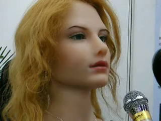

Each PTX00R is capable of memory so they can remember things such as your name for example. As a result, when you get your PTX00R initially, you will be able to introduce yourself to it. In addition, each PTX00R will come with different programmed personalities - you may choose the characteristics you wish to have, language compatabilities and a name for the assistant machine upon purchase and we will program it as accordingly. ASCII is able to re-program your PTX00R if you wish to change aspects such as name and personality at a small price.
Once again, our machines are designed to be human-like for better interaction. We have decided to make our machines appear in a human-like manner. You will be able to treat your PTX00R as if it were an actual person and it will respond to you like an actual person would.

A chinese made android which has been taught to sing, as you can see, she highly resembles an actual human being.
These machines will need to be maintained to a certain degree as well. This maintenance will be involving recharging your PTX00R using 'E Tanks' which ASCII stores all sell and it will not be done frequently as our Energy Cells are designed with Solar Power in mind to preserve energy consumption. As a result, ASCII machines will all be capable of lasting for aproximately one month before they require recharging.
Our machines are also capable of taking security roles. They are equipped with heat detectors and HD Cameras so that you can feel safe about your homes while you are aware. If any malicious actions are undertaken by attackers and your PTX00R detects it, it will pursue the perpetrator and disable them if necessary. In addition, a warning alert will be sent to the police and security departments. This will only be done within your household for safety reasons and due to this, all PTX00R models will not be armed - our machines are also extremely sturdy so you won't have to worry about them getting hurt.